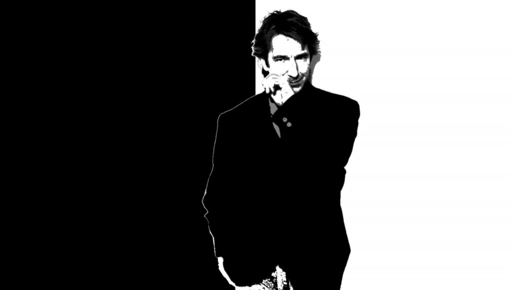
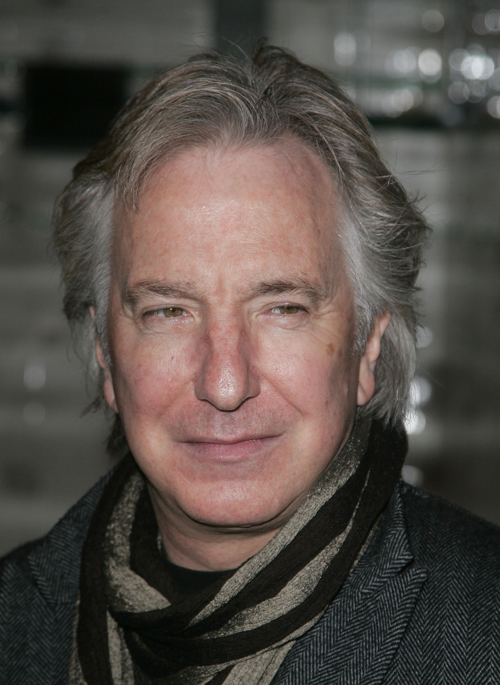

| Nom de naissance | Alan Sidney Patrick Rickman |
|---|---|
| Surnom | Ricky |
| Naissance | 21 fàbrier 1946
Acton, Londres, Angleterre, Royaumes-Unis |
| Nationalité | Anglais |
| Décès | 14 janvier 2016 (à 69 ans)
Londres, Angleterre, Royaumes-Unis |
| Profession | Acteur, Réalisateur |
| Films notables | Harry Potter (2001-2011)
Love Actually (2003) Sweeney Todd : Le Diabolique Barbier de Fleet Street (2007) |
| Site internet | http://alanrickman.com/ |
Alan Rickman, né le 21 février 1946 à Londres et mort le 14 janvier 2016 dans la même ville, est un acteur britannique. Comédien de renom dans les productions classiques et modernes, et ancien membre de la Royal Shakespeare Company, il se fait connaitre au théâtre pour son role du Vicomte de Valmont dans Les Liaisons dangereuses (1985). Il rencontre le succès au cinéma dès Piège de cristal en 1988, mais sa notoriété mondiale est principalement due à son interprétation de l'énigmatique professeur Rogue dans la saga Harry Potter, de 2001 à 2011. En parallèle de sa carrière cinématographique, il continue à apparaître dans de nombreuses productions théâtrales, et devient metteur en scène, dans le West End de Londres comme à Broadway. Il est également connu pour ses rôles de premier plan comme le shérif de Nottingham dans Robin des Bois, prince des voleurs (1991), ainsi que le colonel Brandon dans Raison et Sentiments d'Ang Lee (1995), ou encore Harry dans Love Actually face à Emma Thompson. Le quotidien britannique The Guardian l'a mentionné comme étant l'un des meilleurs acteurs à n'avoir jamais été nommé à un Oscar, bien qu'il ait remporté nombre de récompenses du cinéma au cours de sa carrière1. Peut-être plus encore que ses interprétations, c'est sa voix qui constitue un cas unique dans le paysage cinématographique contemporain2,3,4. Décrite par l'actrice Helen Mirren comme « [une voix] qui suggère à la fois la douceur du miel et la lame dissimulée d'un stiletto5 », elle a été reconnue comme l'une des plus parfaites du répertoire humain, regroupant un mélange de ton, de vitesse, de fréquence et d'intonation « idéaux »6,7. Du côté de la réalisation, il signe en 1997 le film L'Invitée de l'hiver, dont il est également le scénariste, et réitère en 2014 avec Les Jardins du roi. Il meurt d'un cancer du pancréas à l'âge de 69 ans le 14 janvier 2016, sa dernière participation à un film étant celle de la voix originale de la Chenille (ou Absolem) dans Alice de l'autre côté du miroir.
Alan Sidney Patrick Rickman est né le 21 février 1946 dans le quartier de Hammersmith à Londres d'une famille modeste, d'un père irlandais, Bernard Rickman et d'une mère galloise, Margaret Doreen Rose, née Bartlett. Son père était ouvrier d'usine et sa mère, mère au foyer. Il est le deuxième d'une famille de quatre enfants : David Rickman né en 1944, graphiste, Michael né en 1947, entraîneur de tennis et Sheila née en 1949. Son père meurt d'un cancer des poumons alors qu'il n'a que huit ans. Sa mère se remarie, mais divorce trois ans après. «Il n'y avait qu'un seul amour dans sa vie», a déclaré plus tard Alan Rickman. Elle meurt en 1997. Il grandit dans le West End de la capitale britannique. Alan fréquente l'école primaire Derwentwater, dans Acton, une école qui suit la méthode Montessori. Son tout premier rôle fut à l'âge de 7 ans, où il joua le rôle principal de la pièce King Grizzli Bear, et dans lequel sa mère lui avait confectionné un morceau de tissu scotché sur son menton pour lui faire une barbe8. Lorsqu'il est enfant, il souffre de problèmes d'élocution9 : sa mâchoire inférieure est alors très étroite, rendant sa prononciation indistincte et étouffée. Cette mâchoire inférieure lui donne par la suite une voix très reconnaissable.
Malgré un réel intérêt pour l'art dramatique (il joue dans de nombreuses pièces dans le cadre de ses études secondaires), il reçoit d'abord une formation de graphiste à la Chelsea College of Art and Design où il rencontre sa future compagne, Rima Horton, une politicienne britannique. Il a créé plus tard, avec plusieurs de ses amis, une société de graphisme : Graphiti9. Il poursuit ensuite ses études à la Royal College of Art et dirige pendant trois ans une équipe de dessinateurs techniques. Puis, suivant les conseils de ses professeurs, Rickman saute le pas à l'âge de 26 ans et obtient une bourse qui lui permet d'entrer à la Royal Academy of Dramatic Art. Sorti diplômé, il fréquentera plusieurs troupes professionnelles et s'essayera à la comédie musicale en 1975 avec le Haymarket Theatre de Leicester. En 1978, Rickman rejoint la troupe de la Royal Shakespeare Company. Insatisfait, il la critiquera dans les années 1998, car, d'après lui, elle aurait négligé de jeunes talents10.
 